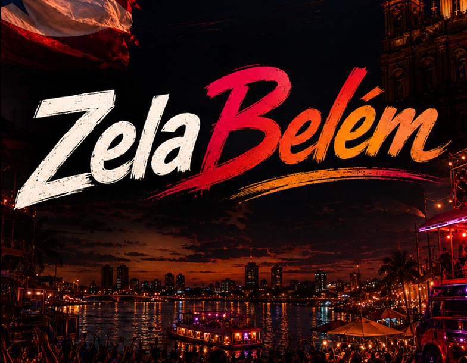
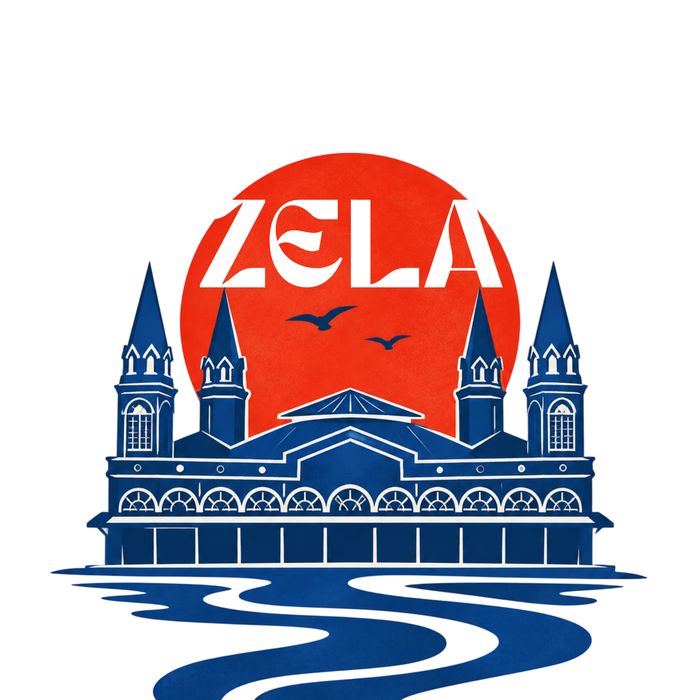

Construindo experiências digitais limpas, rápidas e impactantes que conectam marcas com seus públicos.
Transformando ideias em soluções digitais.
01° 27′ S, 48° 30′ WBelém do Pará, Brasil
Olá, eu sou Gabriel Rodrigues Bezerra — Desenvolvedor Full Stack e estudante de Ciência da Computação (8º semestre, UNAMA).
Uno a precisão da engenharia de software e a disciplina de garantia de qualidade (QA) à sensibilidade de design de interface. Minha abordagem prioriza código limpo, arquitetura sólida, alta velocidade de carregamento e respeito absoluto aos critérios de acessibilidade e experiência do usuário.
8ºSemestre de Ciência da Computação
5+Projetos Desenvolvidos & Entregues
2026Ano de Conclusão da Graduação
01 // SELEÇÃO DE PROJETOS
Meus trabalhos
Tive a oportunidade de trabalhar em uma variedade de projetos combinando engenharia de software, inteligência urbana e plataformas de impacto social.


Destaque Urbano
Inovação Cívica • DadosPROJETO 01
ZelaBelém
Centro de Inteligência Urbana
Ecossistema de monitoramento, análise de demandas públicas e inteligência territorial para a capital paraense. Projetado com visual inspirado na cultura visual ribeirinha e arquitetura de dados robusta para serviços cívicos.
Matriz de competências aplicadas em projetos acadêmicos, atuação governamental (SECTET) e ciclos de testes para empresas internacionais (uTest).
01
Front-end & Craft
Desenvolvimento visual de alto padrão com controle total de código e renderização.
HTML5 Semântico & SEO Técnico
CSS3 Moderno (Grid, Flexbox, Custom Props)
JavaScript (ES6+, DOM API, Assincronismo)
Acessibilidade Web (WCAG 2.1 AA)
Performance, Core Web Vitals & Responsividade
02
Engenharia de Software & QA
Metodologias de qualidade, critérios de aceitação e testes em padrões globais.
Testes Exploratórios & Funcionais (uTest)
Reporte Detalhado de Bugs com Evidências
Especificação de Requisitos & Rastreabilidade
Testes de Regressão & Aceitação
Ciclos Estruturados de Qualidade
03
Back-end & Dados
Lógica de servidor, scripts de automação e modelagem de dados estruturada.
Python (Scripts, automação e análise)
SQL & Bancos de Dados Relacionais
Consumo e Integração com APIs REST
Lógica Algorítmica e Estrutura de Dados
Arquitetura de Sistemas
04
Design & Ferramentas
Criação de identidades visuais, prototipagem ágil e tooling produtivo.
Prototipagem em Alta Fidelidade (Figma)
Criação de Design Systems & Tokens
Identidades Visuais Digitais (LADS)
VS Code, Git & Controle de Versão
Documentação Técnica & Especificações
03 // HISTÓRICO PROFISSIONAL
Experiências de trabalho
Atuação em ciclos globais de QA, liderança em comunicação acadêmica de IA e gestão pública em ciência e tecnologia.
uTest
Testador de Software FreelanceInternacional • Remoto
Garantia de Qualidade em Aplicações Web e Mobile
Execução de testes exploratórios e funcionais minuciosos em softwares de empresas internacionais de grande porte. Responsável pelo reporte de falhas críticas, documentação com evidências visuais completas e mapeamento sistemático de passos de reprodução.
Participação em ciclos formais de QA com rigorosos critérios de aceitação.
Rastreabilidade de incidentes e validação de correção em múltiplos dispositivos.
Foco em usabilidade real, integridade de dados e estabilidade de fluxo.
Impacto Técnico
Elevação da confiabilidade e taxa de detecção precoce de bugs antes do deploy em produção.
Ciclos de QAMobile & WebBug Tracking
LADS
Diretor de ComunicaçãoLiga Acadêmica • UNAMA
Identidade Digital, Divulgação Científica e IA
Liderança na concepção de identidades visuais, prototipagem de interfaces e planejamento estratégico de comunicação para a Liga Acadêmica de Inteligência Artificial e Ciência de Dados.
Criação de protótipos digitais e peças conceituais para iniciativas de pesquisa.
Divulgação técnica de inteligência artificial em simpósios e encontros de inovação.
Coordenação visual de campanhas para atração de novos pesquisadores e membros.
Área de Atuação
Design de comunicação técnica e democratização do conhecimento em IA.
UI PrototypingComunicaçãoData Science
SECTET
Estagiário de TecnologiaSetor Público • Governo do Pará
Apoio à Diretoria de Ciência e Tecnologia
Atuação na Secretaria de Estado de Ciência, Tecnologia e Educação Profissional do Pará. Suporte direto aos processos administrativos e tecnológicos da Diretoria de Ciência e Tecnologia.
Elaboração e revisão de relatórios técnicos, notas oficiais e pareceres.
Organização e gestão de fluxos de dados em sistemas governamentais.
Articulação técnica com representantes públicos e participação em eventos de ciência estadual.
Contexto Institucional
Rigor documental, gestão pública e articulação do ecossistema de inovação paraense.
Governo PAGestão TécnicaPolíticas de C&T
04 // LABORATÓRIO & PESQUISA
Em desenvolvimento
Espaço de experimentação contínua, estudos de caso e protótipos em andamento com foco em inovação técnica e impacto local.
Em Experimentação
Interações Fluidas & Arquitetura de Micro-Animações
Investigação aplicada em performance de animações CSS aceleradas por GPU, minimização de layout shifts e controle refinado de estados de foco acessíveis.
Pesquisa Acadêmica
Projeto de Intervenção Tecnológica Comunitária
Desenvolvimento de solução de engenharia de software aplicada à realidade amazônica e desafios urbanos da região metropolitana de Belém.